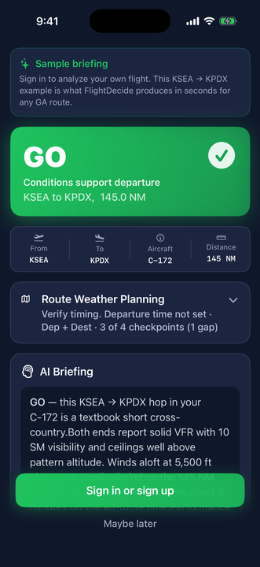
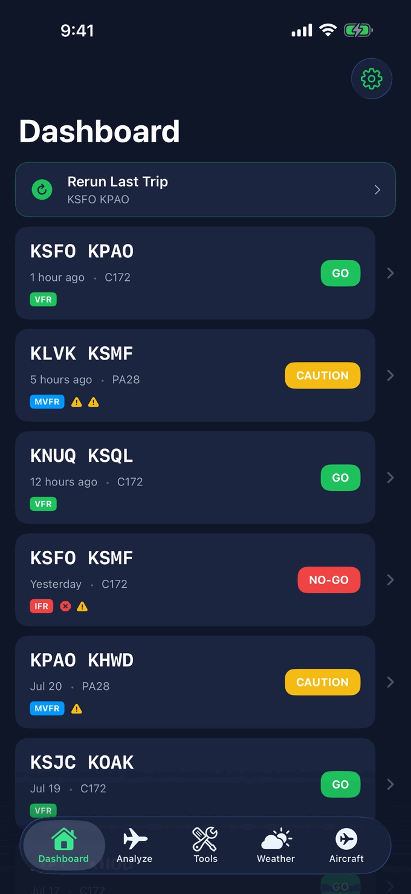
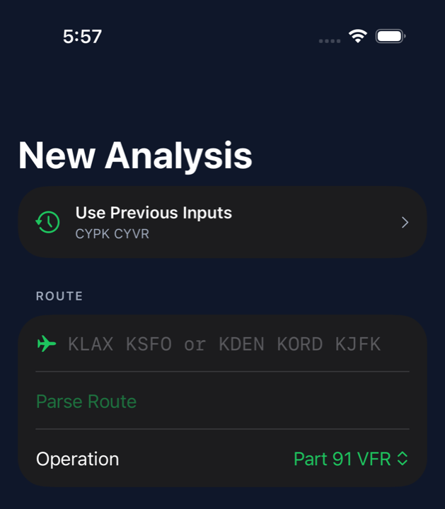
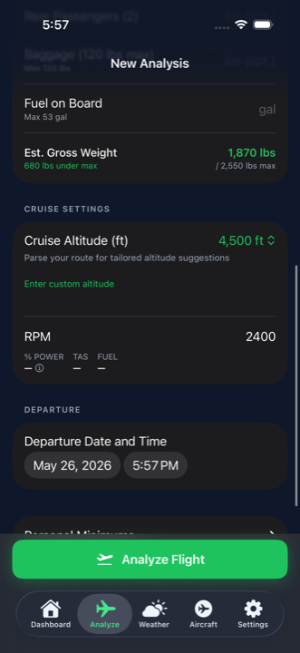
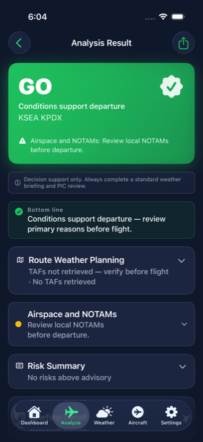
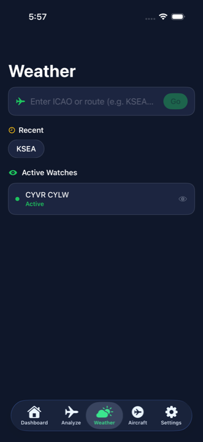
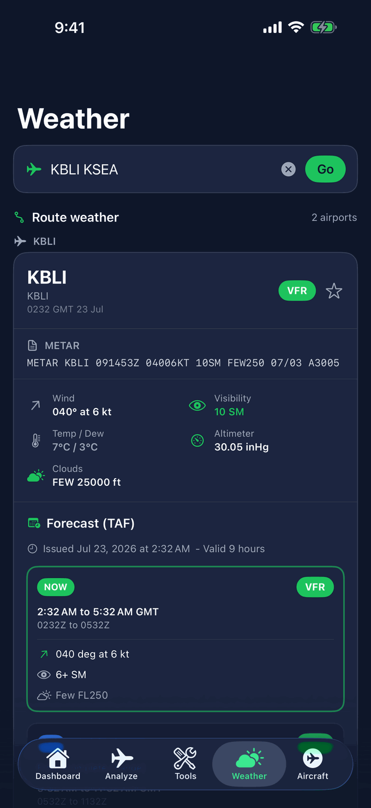

The complete walkthrough: set up your account, minimums, and aircraft; run and read an analysis; use the Flight Profile, NOTAM tools, Weather Watch, and the calculation worksheet; and build the habits that make the verdict genuinely yours.
!
You are pilot in command. FlightDecide is an advisory self-briefing tool. It does not file flight plans, issue clearances, or replace an official weather briefing. The final go or no-go decision is always yours.
01 · Overview
What FlightDecide does
FlightDecide is a preflight self-briefing assistant for general aviation pilots. You enter a route, an aircraft, and a planned departure time. The app pulls live aviation weather and NOTAMs for your route and flight window, computes weight and balance, fuel, and performance from your aircraft profile, and returns a scored GO, CAUTION, or NO GO verdict with a plain-language briefing.
Behind every interpretation, the raw METAR, TAF, or NOTAM is one tap away. The app is built around the same questions you already ask yourself before a flight, organised so nothing important gets lost.
The first time you open FlightDecide, before you create an account, the app shows a built-in sample briefing: a worked KSEA → KPDX example with a scored GO verdict and a plain-language summary, so you can see the kind of advisory result FlightDecide produces before you sign up.

Before you sign in, a built-in sample briefing (KSEA → KPDX) shows the kind of scored, advisory result FlightDecide produces.
Reads your flight window. Forecasts and NOTAMs are interpreted for your planned departure and arrival, not just "right now."
Scores each risk category. Departure weather, route weather, destination weather, takeoff and landing performance, weight & balance, fuel, and airspace & NOTAMs each get their own verdict.
Uses your aircraft's numbers. Fuel, weight and balance, and takeoff/landing distances are computed against a published model, not generic estimates.
Knows your limits, not just legal limits. Personal minimums and your experience level are part of every analysis.
Keeps the raw data one tap away. Every interpretation is paired with its source METAR, TAF, or NOTAM so you can verify it yourself.
Reports coverage gaps as gaps. A missing data source is shown explicitly, never hidden behind a silent "all clear."
02 · Step 1
Create your account and answer the onboarding questions
Setup takes about two minutes, and everything you answer can be changed later in Settings. Here is exactly what the app asks for and why.
Sign up and the advisory disclaimer
Create an account with your email and a password, or use Sign in with Apple. An account keeps your aircraft profiles, minimums, and analysis history in sync if you change phones.
Verify your email when the banner asks — it protects account recovery.
Read the advisory disclaimer once, properly. The app asks you to acknowledge that it is decision support, not an official briefing. That framing matters for how you should use every screen after it.

After setup you land on the Dashboard. Recent analyses live here; the bottom tab bar reaches Analyze, Weather, Aircraft, and Settings.
The pilot onboarding: three questions worth answering honestly
After sign-up, FlightDecide asks about you — not to gate features, but because the analysis is calibrated to the pilot flying:
Your certificate — student, private, instrument, commercial, or ATP. This scales how conservatively conditions are scored: what shows green for an instrument-rated pilot can show amber for a student working on cross-countries.
Your flight hours and recency. Approximate is fine. Six weeks out of the cockpit is exactly the situation the app is designed to catch, so tell it the truth.
Your personal minimums — minimum ceiling (ft), minimum visibility (SM), and maximum crosswind (kt) to start. These become soft warnings in every analysis: a condition that is legal but below your line gets flagged so you decide explicitly, not by default.
Not sure what minimums to enter? Start with the numbers you were taught for solo work and tighten or relax them as your flying tells you. Common starting points for a new private pilot: ceiling 2,500–3,000 ft, visibility 5–6 SM, crosswind 10–12 kt. You can change them anytime in Settings, or override them per flight.
Two settings worth doing on day one
Regulatory region (Settings → Regulatory Region): choose US (FAA) or Canada (Transport Canada). This drives the right rule citations, fuel-reserve requirements, and night-flying logic throughout the app — set it before your first real analysis.
App Lock (Settings → App Lock & Security): put the app behind Face ID or your passcode if you want your flying history private on a shared device.
The Free plan needs no payment details and includes three full analyses per month plus the built-in aircraft library and live weather — enough to fly the app on real trips before deciding whether unlimited analyses are worth it to you. Plans are covered below.
03 · Step 2
Tune your pilot profile, minimums, and region
Everything from onboarding lives in Settings and deserves a second pass once you have run a few analyses.
Pilot Experience — certificate, hours, and recency. Used to scope the analysis to your experience level.
Flight Decision Preferences — your personal minimums. The color thresholds in every analysis adapt to your certificate level: the same 1,800-ft ceiling can score differently for a student than for an instrument-rated pilot, and the briefing says so.
Comfort settings — how you want icing treated (always avoid, cautious, or flying a FIKI-equipped aircraft) and how conservative to be with passengers or family aboard. These genuinely shift the scoring, so answer as the pilot you are, not the pilot you plan to be.
Regulatory Region — US or Canada, covered in detail in the Canadian section.
Units, Appearance, Notifications — display units, theme, and which alerts (like Weather Watch updates) may notify you.
Personal minimums are the highest-leverage five minutes in the app. Legal minimums are the floor everyone shares. The verdict becomes genuinely yours when the app knows where your line is — and it will tell you when a flight is legal but below it.
04 · Step 3
Set up your aircraft — and verify the prefill
Every analysis is computed against a specific aircraft profile. Before your first flight, open the Aircraft tab and add the airplane you actually fly. Plan ten minutes with the POH and current W&B sheet next to you; it pays back on every analysis afterward.
Start from the library
The library includes common general aviation models — primary trainers through high-performance singles and twins. Pick your model and the profile is prefilled from a curated performance module: cruise table, V-speeds, and typical weights, each marked with where the number came from. Prefilled values are a starting point, and the app treats them that way: it shows you what was filled and asks you to review it.
Review each prefilled number against your POH. The module reflects the type; your airplane has its own empty weight, equipment, and quirks. Correct anything that differs — your values override the module.
Cruise performance comes from published data. The cruise table (altitude, power, TAS, fuel flow) drives the fuel plan and time en route. Check a row or two against the cruise chart you actually flight-plan with.
V-speeds are there for reference and for the performance logic; confirm them for your serial number and equipment.
Weight and balance: yours to enter, on purpose
FlightDecide never guesses W&B values. Empty weight and CG, station arms, fuel arm and capacity, CG envelope limits, and maximum gross/ramp/zero-fuel weights are entered by you, from your aircraft’s current weight-and-balance documents.
Why manual entry is a feature. Your airplane’s W&B changed the day someone installed an avionics stack or repainted it. The only correct source is the current W&B report for your tail number. You own the numbers; FlightDecide does the arithmetic around them — moments, CG position, and envelope checks on every analysis.
Profile gaps and confidence
If a profile is missing something the analysis wants — a runway-performance value, a fuel arm — the result flags it as a profile gap and the verdict carries a confidence level (high, medium, or low) computed from what was and wasn’t available. A low-confidence GO is the app telling you it worked with less than it wanted; fill the gap and re-run.
Add as many aircraft as you fly. Each analysis picks one profile, so the club’s 172 and your partner’s Archer can both live in the list with their own real numbers.
05 · Step 4
Run your first analysis
Open the Analyze tab and fill in the flight you plan to make. The form is designed so a fresh briefing takes under a minute once your aircraft is set up.
Top of the form
Route. Departure, destination, and optional waypoints — "KPAO KMRY" is enough. Tap Parse Route and the app decomposes it into legs with distances and courses, and unlocks altitude suggestions.
Operation. Part 91 VFR or IFR (or the Canadian equivalent). The right fuel-reserve rule and alternate logic follow from this choice.
Use Previous Inputs. If you flew this trip recently, one tap restores the route, aircraft, and loading — the fastest way to re-brief a regular run.

The Analyze tab, top of the New Analysis form.
Aircraft, loading, and departure
Aircraft. Pick the profile that matches the tail number you are flying today. Its empty weight and CG show right under the picker as a sanity check.
Loading. Seat-by-seat weights, baggage, and fuel on board. Estimated gross weight updates live against max gross as you type, so a heavy loading is caught while you can still leave a bag behind.
Cruise altitude and power. After parsing the route you can pick from suggested altitudes (correct hemispheric direction included) or enter your own, and set cruise power from your POH values.
Departure date and time. Make it realistic — forecasts and NOTAMs are interpreted against this window, and an honest window is what makes the interpretation useful.
Personal minimums override (optional). Tighten your minimums for just this flight — first passenger flight, first night cross-country — without touching your saved defaults.

Loading, cruise, and departure inputs. Gross weight margin is shown live.
Tap Analyze Flight. The app pulls live data, runs each scored category, generates the briefing, and shows the result — usually well under a minute. Re-run any time; recent analyses stay on the Dashboard so you can compare a morning briefing against a late-afternoon one and see exactly what changed.
Tip. Run an analysis when you start planning, again the morning of the flight, and once more close to engine start. Conditions and NOTAMs change. The verdict can change with them.
06 · Step 5
Read the verdict and the briefing
The top of the result page is a single advisory verdict for the whole flight, with the headline conditions underneath.

A GO result. The verdict header carries the route, the headline risk, and a one-line bottom line.
GO
No category is in the red and no required corrective action is outstanding. The flight as planned fits within the legal envelope and your personal minimums.
CAUTION
One or more categories are amber. The flight is legal, but something is close to a limit or could deteriorate within your window. Read the briefing and consider the recommended actions.
NO GO
One or more categories are red, or a required corrective action has not been resolved. The flight as planned does not fit. Path to GO suggests the smallest set of changes that would flip the verdict.
The parts of the briefing, in reading order
Primary reasons. The two to four concrete drivers of the verdict, with actual numbers — "departure ceiling 800 ft against your 1,500 ft personal minimum," not "weather is marginal." Read these first; they are the briefing’s thesis.
Supporting factors. What is working in your favor that didn’t need a flag — a tailwind, comfortable fuel, a wide-open envelope.
Things to recheck before departure. Items that were fine at analysis time but can move — a TEMPO group near your window, a NOTAM that starts mid-morning. This list is your final-walkaround companion.
Confidence level. High, medium, or low depending on data and profile completeness. Treat a medium- or low-confidence verdict as an instruction to go fill the gap it names.
The AI narrative briefing. A plain-language walkthrough of the whole flight that ties the categories together. It cites the same data you can expand below it — if a sentence surprises you, the raw source is one tap away.
The verdict is an advisor, not a clearance. A GO does not mean you must fly, and a NO GO does not mean you are forbidden from flying. It means the planned flight fits, or does not fit, the rules and minimums you told the app about.
07 · Step 6
Drill into each category
Tap any category disclosure to expand its detail. Here is what to look for in each.
Departure weather
The departure METAR interpreted for your planned takeoff time, plus the next-few-hours trend from the latest TAF. Flagged states include VFR, MVFR, IFR, LIFR, low-level wind shear, thunderstorms, icing, and reported turbulence.
Destination weather
METAR and TAF at your destination interpreted for your planned arrival window. If the forecast clears or deteriorates around your ETA, you will see it called out with the specific time range from the TAF.
Route weather planning
Up to four en route TAF checkpoints along your route, each interpreted for your overhead time. A flight-window status line tells you whether the route is forecast VFR end-to-end, deteriorating, or has gaps. Raw TAFs are one tap away.
En route hazards
Winds aloft at candidate cruise altitudes, freezing levels, active G-AIRMETs and SIGMETs, and recent PIREPs along your route. Coverage gaps are shown, not hidden.
Performance
Takeoff and landing distances at the planned weights, runway, density altitude, and wind component. Margin against the available runway is computed. A thin margin raises a CAUTION.
Weight & balance
Total weight against maximum gross, ramp, and zero-fuel weights. CG plotted inside or outside the envelope. Adjust passengers, bags, or fuel and the numbers update before you load the airplane.
Fuel plan
A worked fuel plan for the flight: climb, cruise, descent, taxi, plus legal reserve. You see fuel on board, fuel required, reserve minutes available, and whether your operation's reserve rule is met. Extra fuel is shown explicitly.
Airspace & NOTAMs
Every relevant NOTAM gets a plain-language summary and a window-impact line: in effect during your flight, starts after you land, or ended before takeoff. Raw NOTAM text stays available.
08 · Step 7
See the whole flight: the Flight Profile
The Flight Profile is a side view of your flight — climb, cruise, and descent drawn over the terrain, with the hazards placed at the altitudes where they actually live. It answers the question a stack of text products can’t: does my altitude keep me clear of what matters today?
Layers you can toggle: terrain, winds, ceilings, and the freezing level. Turn on what you are worried about; icing bands and turbulence areas are drawn where they sit relative to your cruise line.
Phase stats under the chart show climb time to your cruise altitude, cruise time with groundspeed, and the descent — the same numbers feeding the fuel plan.
Drag to inspect any point along the route; pinch to zoom into a phase.
Profile details below the chart list each route risk with where it applies — "icing, terrain within 2,000 ft, 46–52 NM along the flight path."
Pair it with the optimal cruise altitude analysis, which scores every reasonable flight level for your route against winds aloft, icing potential, and turbulence — so when the profile shows your planned altitude clipping an icing band, the altitude that avoids it is already computed.
Try this once on a clear day: open the Flight Profile on a flight you know well and toggle each layer. Knowing what "normal" looks like on a familiar route is what makes an abnormal picture jump out later.
09 · Step 8
NOTAMs: grouped, mapped, and honest about gaps
NOTAMs are where tired eyes miss things, so FlightDecide does three specific things with them:
Plain-language summaries with window impact. Every NOTAM is summarised and stamped against your flight window: in effect during your flight, starts after you land, or ended before takeoff. A closed runway that reopens an hour before your arrival reads differently from one closed all week — the app says which it is.
Grouping and a map. NOTAMs are grouped by airport and kind rather than dumped as a wall of text, and airspace NOTAMs and TFRs can be viewed on a map so "3 NM south of the field" becomes a shape you can see against your route.
Three honest states. A NOTAM card is only ever one of: NOTAMs found (here they are), queried and zero (the source was asked and returned none), or coverage gap (the source could not be reached or does not cover this airport). "No NOTAMs" is never shown unless the source was actually queried.
A coverage gap is a to-do, not a shrug. If a card says coverage gap, get the NOTAMs from your official source before flight — that is exactly what the label is asking you to do.
10 · Step 9
Check the math: the calculation worksheet
Every computed number in the analysis can show its work. The calculation worksheet lays out the steps the way you would on paper:
Density altitude — field elevation, altimeter, and temperature to pressure altitude and DA.
Takeoff and landing distances — the POH table values used and the interpolation between them for your weight and DA.
Weight & balance — every station’s weight, arm, and moment, the totals, and the resulting CG against the envelope.
Fuel legs — taxi, climb, cruise, descent, and reserve line by line to the total.
This is the fastest way to build trust in the tool: pick one flight, run the worksheet next to your own E6B or spreadsheet numbers, and confirm they agree. It is also the fastest way to catch a profile mistake — if the interpolation starts from a table value that doesn’t match your POH, you found a number to fix in the aircraft profile.
11 · Step 10
Check route weather and TAFs
The dedicated Weather tab is for ad-hoc lookups outside an analysis. Type an ICAO or a route. Single airport for a station view, multi-airport for an en route view.
Type and Go. Enter an ICAO code, or a space-separated route like KBLI KSEA.
Recent codes are saved so the next lookup is one tap.
Active watches show route-level monitoring you have set up from an analysis result.

Weather tab. Search by ICAO or route. Recent codes and active route watches are right there.
A route view, broken down
The Route weather header summarises the leg.
Each airport card shows the raw METAR and the parsed line: wind, visibility, ceiling, temp/dew, altimeter, category (VFR/MVFR/IFR/LIFR).
The Forecast (TAF) block lists FM/TEMPO/PROB groups with the validity window and a per-group category badge.
Scroll to see additional airports in the route stack.

A route lookup renders the METAR and the TAF for each airport, with the active forecast group highlighted.
Inside an analysis, the Route Weather Planning category surfaces the same data interpreted against your planned overhead times. Pre-checked, with any coverage gaps labelled.
12 · Step 11
Watch the weather until you go
A briefing is a snapshot; departure is hours later. Weather Watch covers the in-between: start a watch from any flight analysis and FlightDecide keeps monitoring the route’s weather, re-checking roughly every 20 minutes.
Start it from the analysis result for the route you actually briefed — the watch inherits the route, so what it monitors is what you plan to fly.
Notifications on meaningful change. If conditions shift in a way that would matter to the verdict — a TAF amendment, a category change at your destination — you get a push notification rather than having to keep checking.
The Weather Watch screen shows each active watch with its update history and the latest TAF trend, so you can see how the picture has been moving, not just where it is now.
Watches expire after your flight window passes. Re-analyze the route to resume monitoring — an expired watch on a new flight would be watching stale assumptions.
The habit that works: brief in the morning, start a watch, and re-run the full analysis when the watch pings you or before engine start — whichever comes first.
13 · Step 12
Verify against raw data
A briefing you cannot verify is not a briefing. FlightDecide is built so you can always cross-check.
Raw METARs and TAFs. Each weather card has a Show raw disclosure that reveals the source text, the observation or forecast time, and the issuing station. Read the raw before you fly.
Raw NOTAMs. Every NOTAM summary is paired with a Show raw NOTAM disclosure so you can read the unaltered text.
Time stamps. Each piece of data is stamped with the time it was retrieved. If you ran an analysis well before your departure, re-run it closer to the time.
Coverage gaps. If a data source did not respond for one of your airports, the relevant card says so. Treat it as a missing data flag and obtain the data another way before flight.
Cross-check with an official briefing. Supplement the FlightDecide result with an official weather briefing and the current NOTAM source for your jurisdiction. FlightDecide makes verification easier. It does not replace it.
14 · Step 13
Act on a CAUTION or NO GO
When a category is amber or red, FlightDecide does not stop at the warning. Each card lists ranked Required and Recommended corrective actions with specific numbers you can act on, for example:
Shift a specific weight forward or aft to bring CG inside the envelope.
Add fuel to meet a reserve requirement or your personal extra-fuel target.
Request a different cruise altitude where winds aloft, icing potential, or turbulence improve.
Delay departure until a forecast trend has cleared.
Reduce payload to meet a takeoff or landing distance margin.
For CAUTION and NO GO flights, the Path to GO summary highlights the smallest set of changes that would flip the verdict. Apply the change, re-run the analysis, and confirm the underlying data has not moved against you.
And sometimes there is no path: a closed into-wind runway plus icing on the route is a NO GO that no loading change fixes. The app will say that plainly rather than manufacture a workaround — waiting for another day is also an outcome the tool is designed to support.
15 · Step 14
History, re-runs, and PDF export
The Dashboard keeps your recent analyses with their verdicts. Tap one to reopen the full result, or re-run the same flight against current data in two taps.
Compare briefings for the same flight. A morning CAUTION that became an afternoon GO tells you the trend is real; the reverse tells you to slow down. The history makes that comparison effortless.
Export any analysis as a PDF from the result screen — the verdict, categories, fuel plan, and W&B in one document. Useful for your own records, for a flight review folder, or for showing an instructor exactly what you looked at before a flight.
16 · Regional
Flying in Canada and across the border
FlightDecide has first-class Canadian support — set Settings → Regulatory Region to Canada and the analysis switches to Transport Canada rules end to end:
CARs citations and reserves. Briefing references cite the CARs instead of the FARs, and fuel reserves follow the Canadian rule for your operation type.
Night Rating logic. Night VFR in Canada requires the Night Rating (CAR 401.28), not just recent experience. Tell the app whether you hold it and night flights are scored accordingly.
Class F airspace. Canadian restricted (CYR), advisory (CYA), and danger (CYD) areas along your route are detected and surfaced, from the current NAV CANADA Designated Airspace Handbook cycle.
Canadian SIGMETs and weather are ingested from Environment and Climate Change Canada’s feeds, and where a Canadian source has no public data the app says so and points you to NAV CANADA’s flight planning portal rather than pretending.
Cross-border flights
Enter a route that mixes US and Canadian airports — KSEA → CYVR, CYUL → KBUF — and the briefing adds the customs layer: eAPIS / CANPASS reminders for the direction you are flying, and a check that your first arrival airport is a designated Airport of Entry. If the app cannot confirm AOE status, it tells you to verify with CBP or CBSA — same honest-gap philosophy as everywhere else.
17 · Plans
Plans: Free, Pilot, and Pro with Fleet
Free — three full analyses per month, the complete built-in aircraft library, live weather, and the full verdict experience. No payment details needed. Enough to brief a real flight a few times a month and decide whether the app earns a place in your flow.
Pilot — unlimited analyses, the full AI narrative briefing, custom aircraft profiles, personal minimums, analysis history, corrective actions, and PDF export. The plan for anyone flying regularly.
Pro — everything in Pilot plus Fleet: invite other pilots into a shared group with admin, pilot, and observer roles, and share aircraft profiles and analysis history across it. Built for clubs, partnerships, instructors, and small operators — everyone briefs against the same verified aircraft numbers instead of five private copies drifting apart.
Subscriptions are billed through the App Store and can be cancelled anytime in your Apple account settings. Current pricing is on the pricing section of the home page and on the App Store listing.
18 · Getting comfortable
Getting comfortable: a first-week plan
The fastest way to trust a decision tool is to run it alongside decisions you already know how to make. A concrete plan:
Day 1 — set up properly. Account, honest pilot profile, real personal minimums, regulatory region, and one aircraft profile verified against the POH and current W&B sheet.
Day 1, ten more minutes — brief a flight you know cold. Your home field to the usual burger run, today. You already know the answer; check that FlightDecide reaches it and reads the primary reasons to see why it agrees.
Day 2 — check the math once. Open the calculation worksheet and compare W&B and fuel against your own numbers. One honest comparison buys a lot of calibrated trust.
Day 3 — brief a flight you would not fly. Pick a windy, low-ceiling day and run the same route. Watch which categories go amber and red, and open the Path to GO to see what the app thinks would fix it — and whether you agree.
Day 4 — explore the picture. Open the Flight Profile on a familiar route, toggle terrain, ceilings, and freezing level, and learn what normal looks like.
First real trip — full flow. Brief at planning time, start a Weather Watch, re-run before engine start, and export the PDF. Then compare the app’s reasoning with your own after the flight.
Ongoing — tune your minimums. If verdicts keep flagging things you are genuinely comfortable with (or waving through things you are not), adjust your personal minimums. The tool gets sharper as it learns where your line actually is.
19 · Before you fly
Before-you-fly checklist
A short list to run through after the verdict and before you walk to the airplane.
Route, alternates, planned departure time, and aircraft profile match the flight I am actually making.
Fuel load and loading inputs match what is in the airplane right now.
I have read each amber and red card, not just the verdict.
I have expanded the raw METAR, TAF, and NOTAM text and they say what the summary says.
I have obtained an official weather briefing and the current NOTAMs through my normal preflight source.
Personal minimums are honoured, not just legal minimums.
An alternate plan exists: wait, divert, change route, change altitude, or cancel.
The pilot in command (me) agrees with the verdict.
20 · FAQ
Common questions
Why does FlightDecide make me type in my own weight-and-balance numbers?
Because the only correct source is the current W&B report for your tail number — the same model number can be hundreds of pounds and several inches of arm apart between two airframes. The app deliberately never fills these in for you; it does all the arithmetic once you have entered numbers you have verified.
Where does the data come from?
Live aviation weather (METARs, TAFs, winds aloft, G-AIRMETs, SIGMETs, PIREPs) from official government sources, NOTAMs from the FAA NOTAM system, and Canadian data from NAV CANADA and Environment and Climate Change Canada feeds. Every card shows its source and retrieval time, and a source that could not be reached is reported as a coverage gap.
What happens when I hit the free plan’s three analyses?
The Weather tab, your aircraft profiles, and your existing history keep working; new full analyses resume next month or with a Pilot subscription. There is no automatic charge — upgrading is always an explicit choice, billed through the App Store.
Why does my analysis show fewer en route TAF checkpoints than I expected?
Forecast coverage is not uniform. On a route with sparse forecast stations, fewer checkpoints will appear. You see what is available, and gaps are labelled rather than filled with assumptions.
Why does the verdict say "verify timing" or show a coverage gap?
A data source did not return information for one of your airports or part of your route. The app reports the gap instead of pretending it is an "all clear." Treat it as a missing-data flag and verify through an official source before flight.
What does "recommend waiting" or "recommend a different altitude" mean?
An amber or red category has a forecast trend or wind profile that would improve under a different departure time or cruise altitude. The corrective action lists the specific change that would clear the flag.
Can I use FlightDecide for an IFR flight?
Yes. Choose IFR when entering the flight and the correct reserve rule and alternate logic apply. The briefing also speaks to ceilings, visibility, and icing for IFR considerations. It is still not a substitute for the official IFR briefing, clearance, or dispatch release applicable to your operation.
Does the verdict consider my personal minimums?
Yes, when you have set them. A condition that meets the legal minimum but exceeds your personal minimum is flagged so you decide explicitly rather than by default.
Why did the verdict change between two analyses for the same flight?
Weather, NOTAMs, and forecast trends move. A morning and an afternoon briefing for the same flight can produce different verdicts. That is the point of re-running close to departure.
How do I delete my account and data?
Settings → Account includes account deletion. It removes your account and synced data; see the Privacy Policy for details on what is deleted and when.
FlightDecide is informational. It supports your preflight self-briefing in the spirit of FAA Advisory Circular 91-92, Pilot's Guide to a Preflight Briefing, which describes the self-briefing as a structured way to plan, interpret weather, and identify and mitigate risk. The Advisory Circular is also clear that technology and third-party tools are aids, not substitutes for pilot judgement or for contacting Flight Service when conditions require it.
FlightDecide does not:
Issue official weather briefings or NOTAM products.
File flight plans or request clearances.
Authorise or release the aircraft for flight.
Replace your obligation under 14 CFR 91.103 or your equivalent national rule to become familiar with all available information concerning the flight.